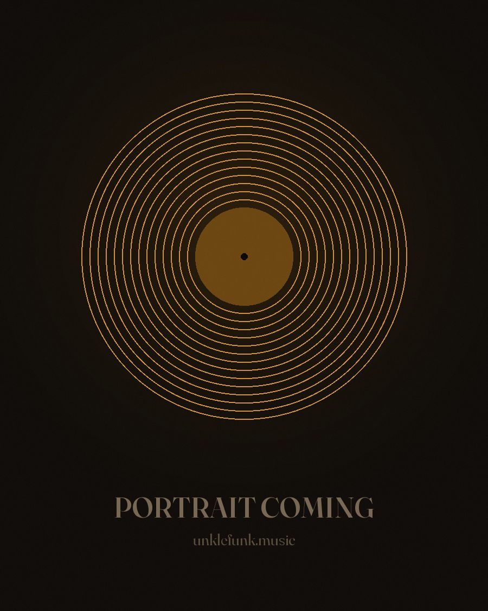

Deep · Sexy · Funky · Underground
UNKLE
FUNK
Deep, funky house from a Kentucky mailman finishing 75 tracks.
75 DEEP · …/75
01 — The Mission
75 Deep.
25 years of house music trapped in 75 unfinished tracks. A mail route that eats 15 hours a day. So I built my own AI tools to finish them all — and I'm doing it in public.
Every track gets finished, mastered, and released. No vault, no someday, no maybes. The tally at the top of this page moves every time one crosses the line — and it only moves one way.
This isn't a comeback story. It's a finishing story. If you've ever had something half-done sitting on a hard drive for years, this one's for you.
02 — The Music
Fresh out of the vault.
Finished tracks land here as they cross the line. Full catalog on SoundCloud and Beatport.
-
Track 1/75
First one across the line
-
Track 2/75
Untitled — in the works
-
Track 3/75
Untitled — in the works
-
Track 4/75
Untitled — in the works
03 — About
The mailman with the record bag.
Unkle Funk makes deep, sexy, funky underground house — the warm, late-night kind that came up through Chicago basements and never needed a big room to work. Sixteen-plus years behind the decks, six in the studio, with releases on Soulsupplement Records, Wulfpack, and DOIN' WORK Records.
In 2010 he launched Sunday Slackin', a weekly podcast of exclusive mixes from DJs and producers around the world. Nine seasons deep, it became one of underground house's most consistent independent platforms.
Then life did what life does. These days he's a mailman in La Grange, Kentucky, walking a route that eats fifteen hours a day — with twenty-five years of house music sitting in 75 unfinished tracks. So he built his own AI tools to finish them, every one, in public. Not for the algorithm. Because unfinished music is a weight, and finishing it is the healing.

Sunday Slackin' — the live show. Coming back.
04 — Connect
Bookings, labels, and the list.
Follow the 75
One email when a track crosses the line. No noise, no spam, unsubscribe anytime.